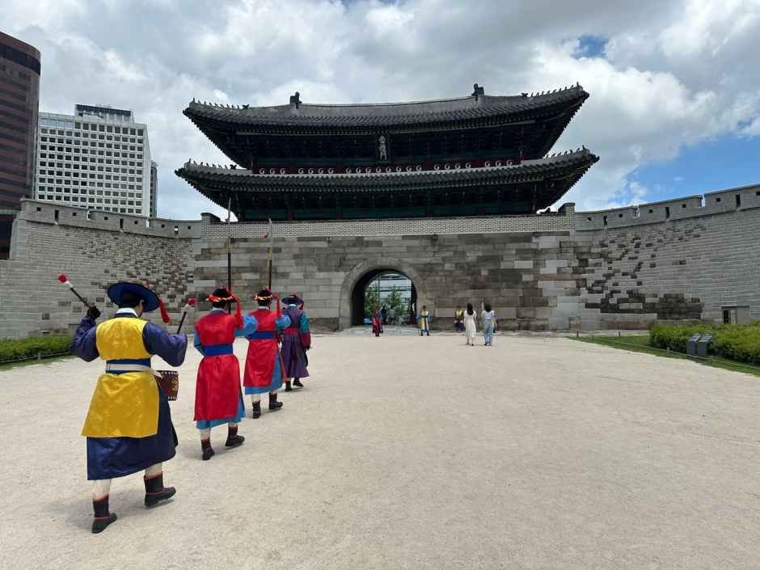
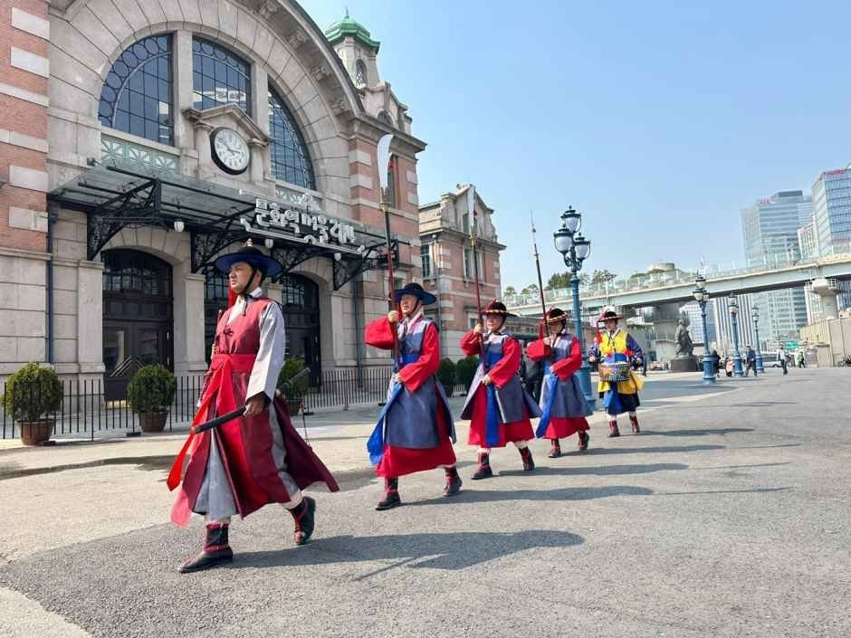

Sungnyemun Gate Guard Ceremony: Overview
This Sungnyemun Gate guard ceremony guide covers one of downtown Seoul's best free shows. Sungnyemun (숭례문), also called Namdaemun, was the main southern gate of Joseon-era Seoul's city wall. Built in 1398, it's a National Treasure. After a 2008 fire destroyed its wooden pavilion, it was rebuilt and reopened in 2013.
Today, guards in colorful Joseon military uniforms recreate the pasu (파수) ceremony, the duty of guarding the city gates. They open the gate in the morning, stand watch and change shifts through the day, patrol nearby streets, and close the gate in the afternoon. It runs every day except Monday and it's free.

Daily Schedule
| Time | What Happens |
|---|---|
| 10:00–10:10 | Gate-opening ceremony (gaemun) |
| 10:10–15:30 | Guard duty with shift changes between the 1st and 2nd guard units (midday break) |
| Late morning | Patrol to Namdaemun Market (about 11:20–11:45) |
| 14:45–15:00 | Patrol toward Seoul Station |
| 15:30–15:40 | Gate-closing ceremony (pyemun) |
Times come from the official Seoul royal guard ceremony site and Korea Tourism Organization. The posted patrol and break times differ slightly between sources, so arrive a little early. Weather can cancel the ceremony.
What You'll See
The ceremony starts as the guards line up in front of the gate. An official announces paru, the dawn bell that once signaled the gates could open. Then a conch shell (nagak) and a long horn (nabal) sound, and the commander orders the gate opened.
Through the day, the 1st and 2nd guard units take turns on watch, with six changes in total. In Joseon times, guarding the city gates became a top priority after the Imjin War and the Manchu invasions, so this was an important military ritual.


Visitor Information
| Item | Details |
|---|---|
| Address | Sungnyemun Plaza, 40 Sejong-daero, Jung-gu, Seoul (서울 중구 세종대로 40) |
| Days | Every day except Monday, all year |
| Hours | 10:00–15:40 (midday break) |
| Fee | Free |
| Getting there | Short walk from Hoehyeon Station (Line 4) or Seoul Station (Lines 1, 4) |
| Contact | +82-2-3789-7402 |
Sources: Korea Tourism Organization (한국관광공사) and the official Seoul royal guard ceremony website. Photos © Korea Tourism Organization. Details may change, so check before you go.
Tips for Watching
- Come for 10:00 (opening) or 15:30 (closing). Those are the most dramatic parts.
- Pair it with breakfast or shopping at Namdaemun Market, right next door.
- Walk to Deoksugung Palace (about 10–15 minutes) for its royal guard-changing ceremony.
- The plaza has little shade. Bring a hat or umbrella in summer and warm layers in winter.
- Don't come on a Monday. There's no ceremony.
Pros & Cons
✅ Pros
- Free and runs almost every day of the year.
- Right in central Seoul, next to Namdaemun Market and Seoul Station.
- Colorful uniforms and great photo spots.
- Easy to combine with Deoksugung and City Hall.
⚠️ Cons
- No ceremony on Mondays, and weather can cancel it.
- Little shade or seating on the plaza.
- Much of the day is guard duty, so plan around the opening, closing and patrol times.
Who It Suits
- Great for: First-time visitors and families with kids.
- Great for: Photographers and history fans.
- Great for: Travelers with a free hour near Seoul Station.
- Less ideal: If you've already seen a palace ceremony and want something different every day of your trip.
Book Your Seoul Trip
Sungnyemun Guard Ceremony FAQ
When is the Sungnyemun Gate guard ceremony?
It runs every day except Monday from 10:00 to 15:40, with a midday break. The gate-opening ceremony is at 10:00 and the gate-closing ceremony is at 15:30. Weather can cancel it.
Is the Sungnyemun guard ceremony free?
Yes. It's a free outdoor event on Sungnyemun Plaza, 40 Sejong-daero, Jung-gu, Seoul.
Where do the patrol guards march?
The guards also go out on patrol (sunra). The posted schedule shows a late-morning patrol to Namdaemun Market and an afternoon patrol toward Seoul Station around 14:45–15:00.
How do I get to Sungnyemun?
It's a short walk from Hoehyeon Station (Line 4) or Seoul Station (Lines 1 and 4). Namdaemun Market is right next to it.
Is it the same as the Gyeongbokgung guard ceremony?
No. Gyeongbokgung and Deoksugung have royal palace gatekeeper ceremonies. Sungnyemun's ceremony recreates the guards who protected the city wall gates of Joseon-era Seoul.
Compact Travel Umbrella
The plaza has little shade. A small umbrella covers sun and rain.